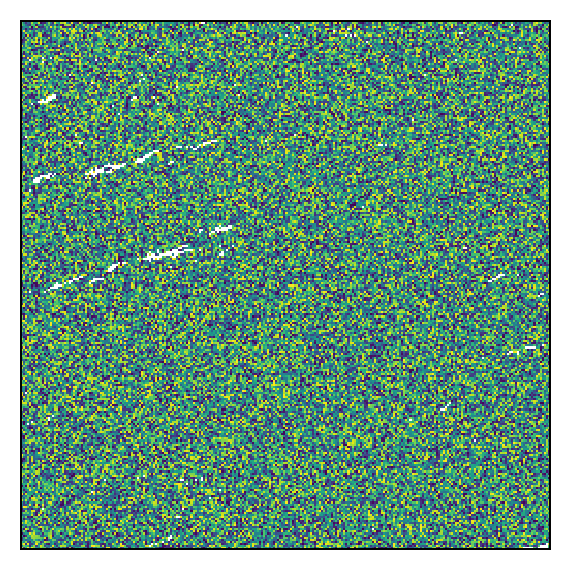

NumPy and Pandas
In the Python Spark API, the work of distributed computing over the DataFrame is done on many executors (the Spark term for workers) inside Java virtual machines (JVM). Most calls to pyspark are passed to a Java process via the py4j library. The user can also ask for data inside the JVM to be brought over to the Python driver (the Spark term for the client application). When dealing with tiles, the driver will receive this data as a lightweight wrapper object around a NumPy ndarray. It is also possible to write lambda functions against NumPy arrays and evaluate them in the Spark DataFrame.
Performance Considerations
When working with large, distributed datasets in Spark, attention is required when invoking actions on the data. In general, transformations are lazily evaluated in Spark, meaning the code runs fast and it doesn’t move any data around. But actions cause the evaluation to happen, meaning all the lazily planned transformations are going to be computed and data is going to be processed and moved around. In general, if a pyspark function returns a DataFrame, it is probably a transformation, and if not, it is an action.
When many actions are invoked, a lot of data can flow from executors to the driver. In pyspark, the data then has to move from the driver JVM to the Python process running the driver. When that happens, if there are any tiles in the data, they will be converted to a Python Tile object. In practical work with Earth observation data, the tiles are frequently 256 by 256 arrays, which may be 100kb or more each. Individually they are small, but a DataFrame can easily have dozens of such tile columns and millions of rows.
All of this discussion reinforces two important principles for working with Spark: understanding the cost of an action and using aggreates, summaries, or samples to manage the cost of actions.
The Tile Class
In Python, tiles are represented with the rf_types.Tile class. This is a NumPy ndarray with two dimensions, along with some additional metadata allowing correct conversion to the GeoTrellis cell type.
from pyrasterframes.rf_types import Tile
import numpy as np
t = Tile(np.random.randn(4, 4))
print(str(t))
Tile(dimensions=[4, 4], cell_type=CellType(float64, nan), cells=
[[0.2952664787818788 0.9342137659383873 -0.5137432369963794
-0.2692630509663406]
[-1.1964452264498373 0.6435711250226327 0.7741518257130167
-0.38659299455734325]
[-0.687655830391429 -0.7144288055494559 -0.027954611616981106
-0.3747434294277208]
[-1.399958282435864 -1.0632961566778796 0.8881323329412869
-1.7550883320739206]])
You can access the NumPy array with the cells member of Tile.
t.cells.shape, t.cells.nbytes
((4, 4), 128)
DataFrame toPandas
As discussed in the raster writing chapter, a pretty display of Pandas DataFrame containing tiles is available by importing the rf_ipython submodule. In addition, as discussed in the vector data chapter, any geometry type in the Spark DataFrame will be converted into a Shapely geometry. Taken together, we can easily get the spatial information and raster data as a NumPy array, all within a Pandas DataFrame.
import pyrasterframes.rf_ipython
from pyspark.sql.functions import lit, col
cat = spark.read.format('aws-pds-modis-catalog').load() \
.filter(
(col('granule_id') == 'h11v04') &
(col('acquisition_date') > lit('2018-02-19')) &
(col('acquisition_date') < lit('2018-02-22'))
)
spark_df = spark.read.raster(cat, catalog_col_names=['B01']) \
.select(
'acquisition_date',
'granule_id',
rf_tile('B01').alias('tile'),
rf_geometry('B01').alias('tile_geom')
)
pandas_df = spark_df.limit(10).toPandas()
pandas_df.iloc[0].apply(lambda v: type(v))
acquisition_date <class 'pandas._libs.tslibs.timestamps.Timesta...
granule_id <class 'str'>
tile <class 'pyrasterframes.rf_types.Tile'>
tile_geom <class 'shapely.geometry.polygon.Polygon'>
Name: 0, dtype: object
User Defined Functions
As we demonstrated with vector data, we can also make use of the Tile type to create user-defined functions (UDF) that can take a tile as input, return a tile as output, or both. Here is a trivial and inefficient example of doing both. A serious performance implication of user defined functions in Python is that all the executors must move the Java objects to Python, evaluate the function, and then move the Python objects back to Java. Use the many built-in functions wherever possible, and ask the community if you have an idea for a function that should be included.
We will demonstrate an example of creating a UDF that is logically equivalent to a built-in function. We’ll quickly show that the resulting tiles are approximately equivalent. The reason they are not exactly the same is that one is computed in Python and the other is computed in Java.
from pyrasterframes.rf_types import TileUDT
from pyspark.sql.functions import udf
@udf(TileUDT())
def my_udf(t):
import numpy as np
return Tile(np.log1p(t.cells))
udf_df = spark_df.limit(1).select(
my_udf('tile').alias('udf_result'),
rf_log1p('tile').alias('built_in_result')
).toPandas()
row = udf_df.iloc[0]
diff = row['udf_result'] - row['built_in_result']
print(type(diff))
np.abs(diff.cells).max()
<class 'pyrasterframes.rf_types.Tile'>
4.767482870704498e-07
We can also inspect an image of the difference between the two tiles, which is just random noise. Both tiles have the same structure of NoData, as exhibited by the white areas.
diff.show(0, 100)
<matplotlib.axes._subplots.AxesSubplot at 0x118f61e10>

Creating a Spark DataFrame
You can also create a Spark DataFrame with a column full of Tile objects or Shapely geomtery objects.
The example below will create a Pandas DataFrame with ten rows of noise tiles and random Points. We will then create a Spark DataFrame from it.
import pandas as pd
from shapely.geometry import Point
pandas_df = pd.DataFrame([{
'tile': Tile(np.random.randn(100, 100)),
'geom': Point(-90 + 90 * np.random.random((2, 1)))
} for _ in range(10)
])
spark_df = spark.createDataFrame(pandas_df)
spark_df.printSchema()
spark_df.count()
root
|-- tile: tile (nullable = true)
|-- geom: point (nullable = true)
10